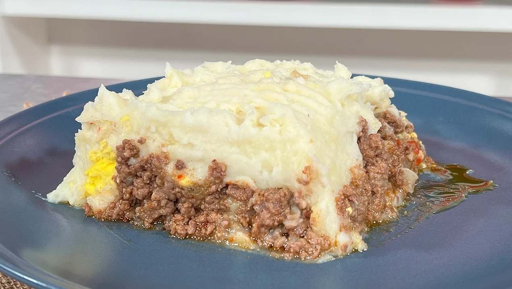

Pastel de Papa

Descripcion
El pastel de papa es un plato tradicional que combina dos capas deliciosas: una base de carne picada sazonada y una cobertura de puré de papa suave y gratinado. Es la versión rioplatense del famoso "Shepherd's Pie" británico
En plato nutritivo y completo, perfecto para los días fríos. Su secreto está en lograr un puré bien cremoso y un relleno de carne que se mantenga jugoso durante el horneado.
Ingredientes
- 1 kg de papas
- 500g de carne picada de res
- 1 cebolla grande
- 1 pimiento morrón rojo pequeño
- 2 huevos duros
- 50g de mantequilla (para el puré)
- 100ml de leche (para el puré)
- Queso rallado para gratinar
- Sal, pimienta, comino y pimentón
Pasos
- Preparar el puré: Hierve las papas en agua con sal hasta que estén tiernas. Escúrrelas y písalas junto con la mantequilla y la leche hasta obtener un puré suave y sin grumos.
- Cocinar el sofrito: En una sartén grande, saltea la cebolla y el pimiento picados finamente hasta que estén blandos.
- el relleno: Agrega la carne picada al sofrito. Condimenta con sal, pimienta, una pizca de comino y bastante pimentón. Cocina hasta que la carne esté dorada pero no seca.
- Agregar los extras: Retira la carne del fuego e incorpora los huevos duros picados (esto le da una textura clásica).
- Armar las capas: En una fuente para horno, coloca primero la base de carne de forma uniforme. Cubre todo con el puré de papa, extendiéndolo con una cuchara o espátula.
- Decorar y añadir queso: Con un tenedor, haz rayas sobre el puré para que se dore mejor y espolvorea abundante queso rallado por encima.
- Gratinado final: Lleva la fuente a un horno fuerte hasta que la superficie esté bien dorada y crocante.
Inicio